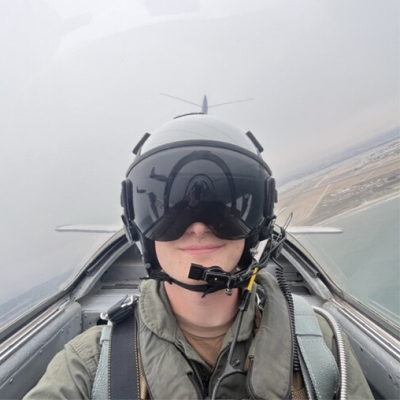
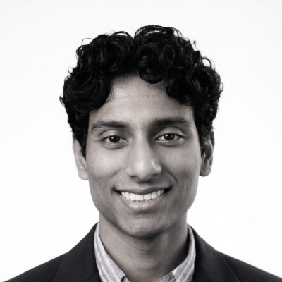

Friends since a high-school engineering class in 2020. Now bringing hardware, machine learning, and sleep science together.

HARDWARE & PRODUCT
Grant Kaufmann
Harvard mechanical and electrical engineering. Engineering experience at SpaceX. Grant designs the mask’s EEG/EOG circuitry, flexible circuit board, and mechanical architecture—taking the idea from signals to something you can wear.
His work connects sleep science studied with Dr. Charles Czeisler to hands-on electronics, CAD, and design for manufacturing.

SOFTWARE & MACHINE LEARNING
Mohammad Jiahd
Harvard computer science. Mohammad has built open-source time-series machine-learning tools for satellite data. At DeltaLabs, he develops the sleep-stage model and evaluation pipeline, embedded inference, and the companion app.
He brings the same focus to each layer: turning complex signals into useful, accessible information.